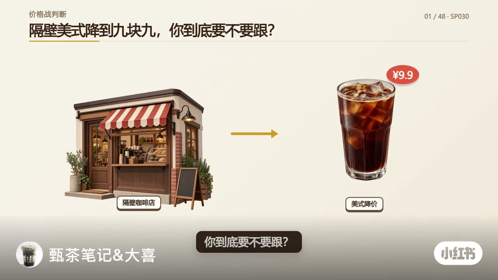
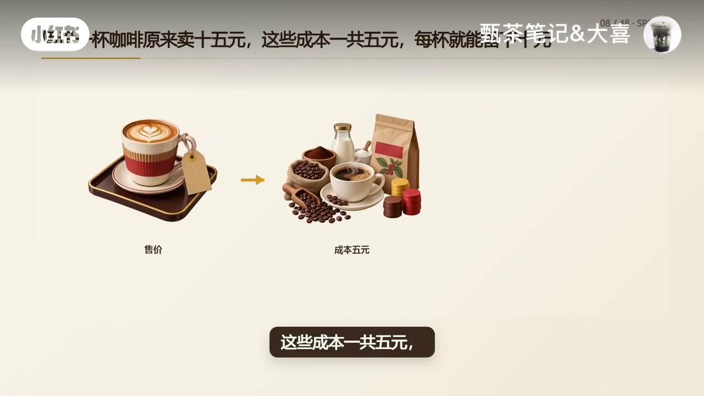
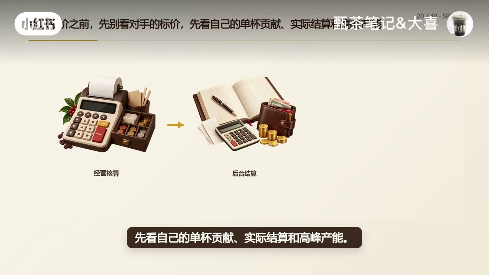
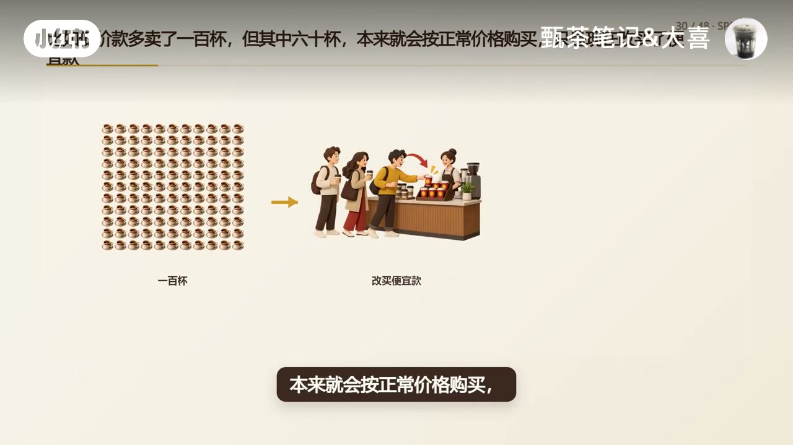

内容要点
小红书账号「甄茶笔记&大喜」用「隔壁美式降到九块九」开场，不直接回答跟不跟价，而是把问题改写成：降价以后要多卖多少杯，才能留下原来一样的钱。视频用十五元售价、五元变动成本的示意算例，算出九块九时约需二百零四杯才持平，再提醒平台到手价、人力产能与差评损耗都会让真实门槛更高；随后区分「完全不回应」与「有边界测试」，强调订单≠新客、小店不能照抄连锁，最后给出入口款、范围限定与停止条件。下列实录按时间线展开；数字均为作者示意，非某一门店实测。
知识结构
别盯对手卖多少；算降价后要多卖多少杯才能留下原来的钱。真正要防的是订单涨了利润没了。
留下≠净利润；15元−5元成本=每杯留10元。降到9.9后每杯4.9，持平约需204杯，且到手未必是9.9。
翻倍后要加兼职、出杯排队、退款差评；先看单杯贡献、实际结算、高峰产能。
同质商圈完全不回应可能丢单；关键是这次让利要换守单、获客还是填闲时。
多100杯活动单可能含60杯本会原价买；连锁能扛多久不能证明你也能。
入口款+限定范围；写清停止条件；不能只跟价格，先算留下多少再确认换回什么。
可以跟，但不能只跟标价。先算单杯贡献与实际结算，再确认高峰产能接得住，最后用小范围测试核对让利是否换来新客、连带与复购；算不清就不要全店降价。
00:00–00:20开场：别只看对手卖多少，先算要多卖多少杯
视频标题卡直接抛出场景：隔壁美式降到九块九，你到底要不要跟？作者没有先给「跟」或「不跟」的口号，而是改写判断标准——答案不是看他卖多少钱，而是看你降价以后要多卖多少杯，才能留下原来一样的钱。
示意很干脆：一杯原来能留下十元，降价后只剩四块九，销量就要接近翻倍。作者把小店价格战的真正风险说得很反直觉：要防的不是订单下降，而是订单涨了、利润反而没了。于是口播转入「先把这笔账算完整」。

00:20–00:58单杯贡献：十五元到九块九，纸面大约二百零四杯
「留下」在这里被明确定义：不是门店最后的净利润，而是售价扣掉原料、包装和其他随订单变化的成本以后，每卖一杯还能留下多少钱。示意算例是一杯原价十五元、这些成本一共五元，每杯留下十元；一天卖一百杯，一共留下一千元。
售价降到九块九、成本仍按五元计，每杯只剩四块九；想继续留下一千元，就要卖到大约二百零四杯。作者立刻补刀：二百零四杯只是纸面答案——活动页写九块九，不等于商家实际到手九块九；平台补贴多少、门店承担多少、每单还有哪些费用，都要回到后台结算核对。

00:58–01:25订单翻倍后，成本和产能也可能一起动
纸面持平之外，真实经营还会抬高门槛：一个人坐得过来，可能变成要加兼职；原来的备料、制冰和咖啡机产能，可能变成出杯排队；等待时间一长，退款、差评和损耗也会跟着增加。（Whisper 原词「初杯排队」，据语境校正为「出杯排队」。）
因此跟价之前，先别看对手的标价，先看自己的单杯贡献、实际结算和高峰产能。只要其中一个扛不住，订单越多，门店可能越忙，也越难留下钱。

01:25–01:54不是完全不能跟：先问这次让利换回什么
作者随即纠偏：这不是说小店完全不能跟价。同一个商圈里，如果几家店的产品、评分和配送时间都差不多，价格确实会影响顾客选择；你完全不回应，订单可能会被分走。
但此时要判断的已经不是「九块九值不值得跟」，而是「这次让掉利润准备换回什么」——守住订单、让新顾客第一次下单，还是填补下午空闲时段。目标不同，降价的产品、时间和范围就不同；目标定下来以后，还要分清增加的是订单还是顾客。
01:54–02:29多出来的活动单，不等于多出来的新客
画面用一百杯阵列解释蚕食：其中六十杯本来就会按正常价格购买，只是现在改买了便宜款。看起来多了一百杯活动订单，真正新增的顾客却没有一百个；你还主动让掉了原本能留下的钱。（约 01:54 前后有短口播缺口，完整「多卖一百杯」设定由画面字幕补全。）
真正被低价带来的顾客，也不能只看第一次下单——有没有顺带购买其他产品、活动结束后会不会按正常价格回来，才决定这次让利有没有买回后续价值。这也是小店不能直接照抄连锁九块九的原因：前台标价一样，背后的采购成本、品牌流量、会员体系、排班效率和库存能力可能完全不同；别人能承受多久，不能替你证明自己也能承受。

02:29–03:25把跟价做成边界清楚的测试，并写好停止条件
对小店更稳妥的做法不是全店一起降，而是把价格竞争做成一次边界清楚的测试：选一款结构简单、出杯稳定的产品作为价格入口，再限定新客、时段、数量或活动周期；主力产品和真正承担利润的产品，不要一起被拖下去。促销价、原价和试用条件也要写清楚，不能靠虚构原价制造便宜感。
测试开始前就把停止条件写下来：单杯贡献低于底线、出杯速度明显下降、退款和差评上升，或者低价订单增加了却没有带来新客、连带购买和正常价复购——就应该缩小范围、换产品或停止活动。收束句很干净：你不是不能跟，而是不能只跟价格；先算每杯能留下多少，再看门店能不能接住新增订单，最后确认这次让利到底换回了什么。如果这些问题没有答案，就不要直接全店降价。片尾留下互动：如果是你的店，你会先用一款产品小范围测试，还是暂时不跟？
详细文字转录（129段）
以下内容按 Whisper 原始分段完整呈现，可能包含识别误差；正文已按画面与语境校正（如「出杯排队」），转录区保持原样以便核对。
隔壁美式降到9块9你到底要不要跟
答案不是看他卖多少钱
而是看你降价以后要多卖多少杯
才能留下原来一样的钱
如果一杯原来能留下10元
降价后只剩4块9
销量就要接近翻倍
所以小店打价格战
真正要防的不是订单下降
而是订单涨了
利润反而没了
先把这笔账算完整
这里说的留下
不是门店最后的净利润
而是售价扣掉原料
包装和其他随订单变化的成本以后
每卖一杯还能留下多少钱
假设一杯咖啡原来卖15元
这些成本一共5元
每杯就能留下10元
一天卖100杯
一共留下1000元
售价降到9块9
成本还是5元
每杯只剩4块9
想继续留下1000元
就要卖到大约204杯
但204杯只是纸面答案
真实经营里你可能还要卖的更多
因为活动页面写的是9块9
不代表商家实际到手就是9块9
平台补贴多少
门店承担多少
每单还有哪些费用
都要回到后台结算里核对
订单接近翻倍以后
成本也不一定停在原来的位置
一个人坐得过来
可能变成要加兼职
原来的备料
制冰和咖啡机产能
可能变成初杯排队
等待时间一长
退款差评和损耗也会跟着增加
所以跟价之前
先别看对手的标价
先看自己的单杯贡献
实际结算和高峰产能
只要其中一个扛不住
订单越多
门店可能越忙
也越难留下钱
可这是不是说明
小店就完全不能跟价
也不是
同一个商圈里
如果几家店的产品
评分和配送时间都差不多
价格确实会影响顾客的选择
你完全不回应
订单可能会被分走
但这时候要判断的
已经不是9块9值不值得跟
而是这次让掉利润
准备换回什么
是为了守住订单
是为了让新顾客第一次下单
还是为了填补下午的空闲时段
目标不同
是和降价的产品
时间和范围就不同
目标定下来以后
还要分清
增加的是订单还是顾客
但其中60杯
本来就会按正常价格购买
只是现在改买了便宜款
看起来多了100杯活动订单
真正新增的顾客却没有100个
你还主动让掉了原本能留下的钱
剩下真正被低价带来的顾客
也不能只看第一次下单
有没有顺带购买其他产品
活动结束后会不会按正常价格回来
才决定这次让利有没有买回后续价值
这也是小店不能直接照抄连锁价格的原因
前台同样卖9块9
背后的采购成本
品牌流量
会员体系
排班效率和库存能力可能完全不同
别人能承受多久
不能替你证明自己也能承受
对小店来说
更稳妥的做法不是全店一起降
而是把价格竞争做成一次边界清楚的测试
选一款结构简单
出杯稳定的产品作为价格入口
再限定新客
时段
数量
或者活动周期
主力产品和真正承担利润的产品
不要一起被拖下去
促销价
原价
和试用条件也要写清楚
不能靠虚构原价制造便宜感
测试开始前
就把停止条件写下来
单杯贡献低于底线
出杯速度明显下降
退款和差评上升
或者低价订单增加了
却没有带来新客
连带购买和正常价复购
就应该缩小范围
换产品或者停止活动
所以隔壁美式降到9块9
你不是不能跟
而是不能只跟价格
先算每杯能留下多少
再看门店能不能接住新增订单
最后确认这次让利到底换回了什么
如果这些问题没有答案
就不要直接全店降价
如果是你的店
你会先用一款产品小范围测试
还是暂时不跟